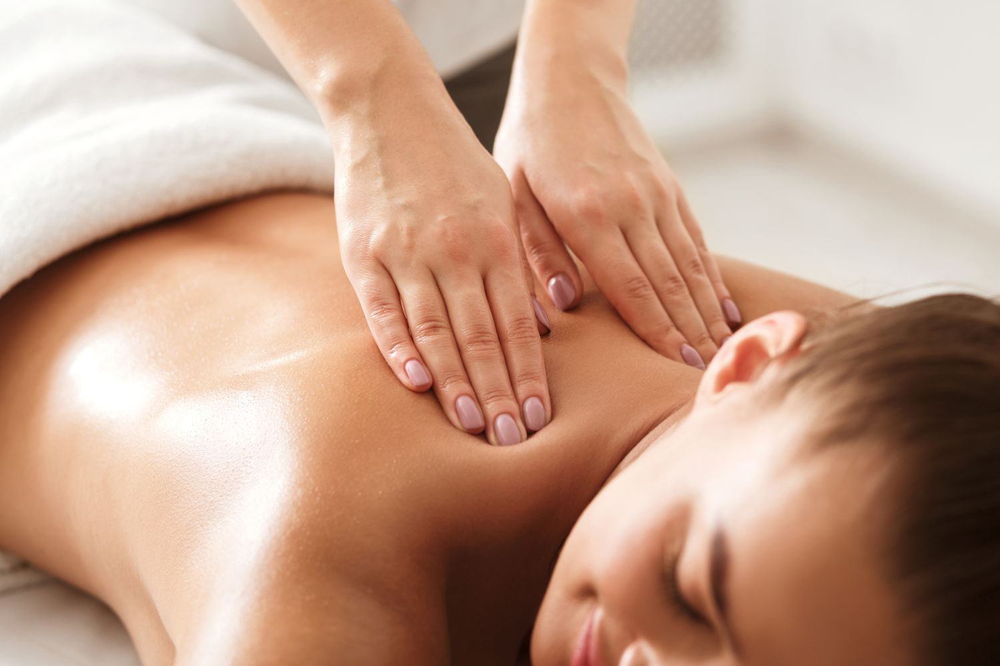
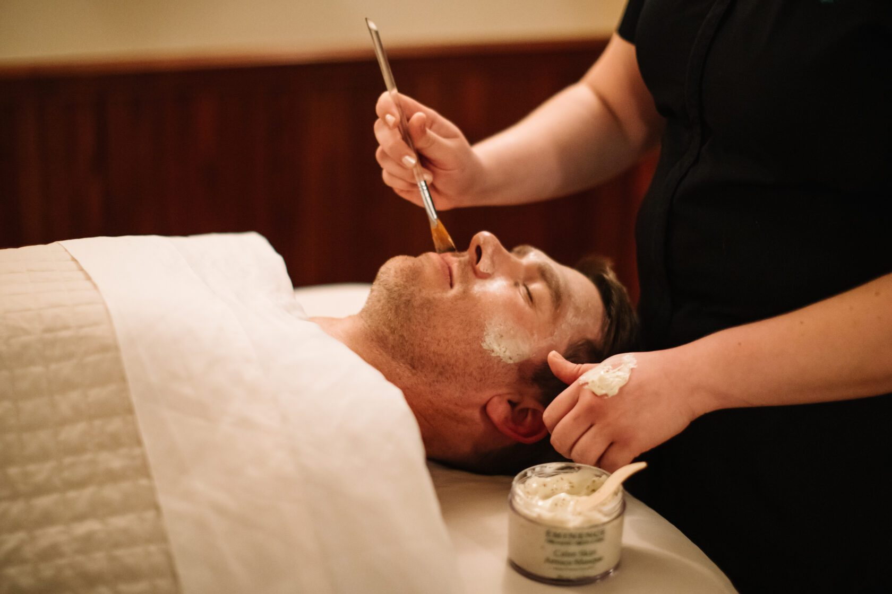
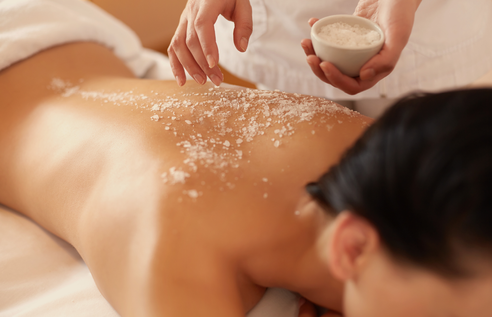
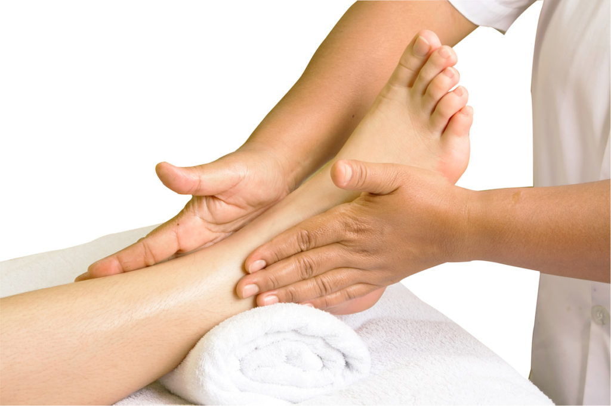
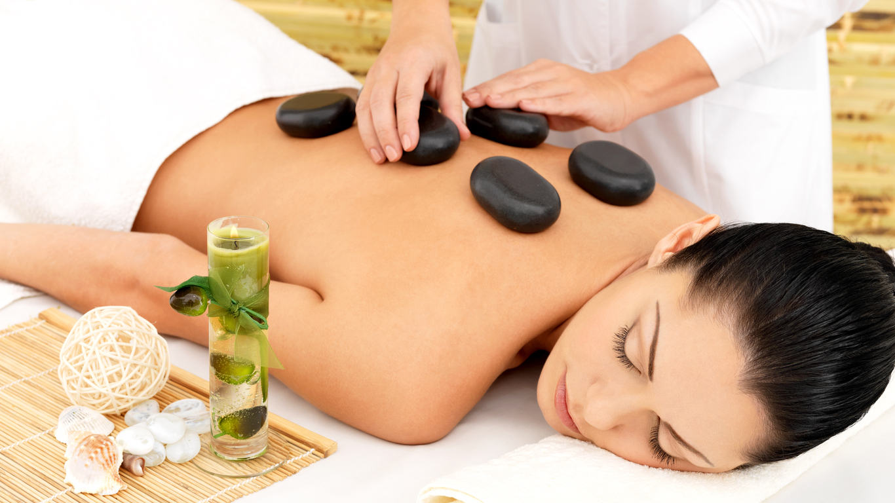

(60 Min)
Pijatan yang lembut dan relaks untuk membantu meredakan stres dan meningkatkan sirkulasi darah.
(90 Min)
Pijatan yang menargetkan lapisan otot yang lebih dalam untuk mengurangi ketegangan dan kekakuan.
(75 Min)
Pijatan relaksasi dengan minyak aromaterapi untuk meningkatkan mood dan keseimbangan tubuh.
(90 Min)
Pijatan menggunakan batu panas untuk melepaskan ketegangan otot dan memberikan kenyamanan ekstra.
(45 Min)
Eksfoliasi kulit untuk mengangkat sel-sel kulit mati dan mengembalikan kelembutan kulit Anda.
(60 Min)
Perawatan tubuh yang melembabkan dan menutrisi kulit, membuat kulit terasa lebih segar dan bercahaya.
(60 Min)
Perawatan wajah yang membersihkan, melembabkan, dan memperbaiki kulit wajah agar tampak segar.
(30 Min)
Refleksi kaki untuk meningkatkan sirkulasi dan memberikan relaksasi pada tubuh secara keseluruhan.
Swedish Massage (60 Min): Rp300,000
Deep Tissue Massage (90 Min): Rp450,000
Aromatherapy Massage (75 Min): Rp400,000
Hot Stone Massage (90 Min): Rp500,000
Body Scrub (45 Min): Rp250,000
Body Wrap (60 Min): Rp350,000
Facial Treatment (60 Min): Rp300,000
Foot Reflexology (30 Min): Rp150,000




